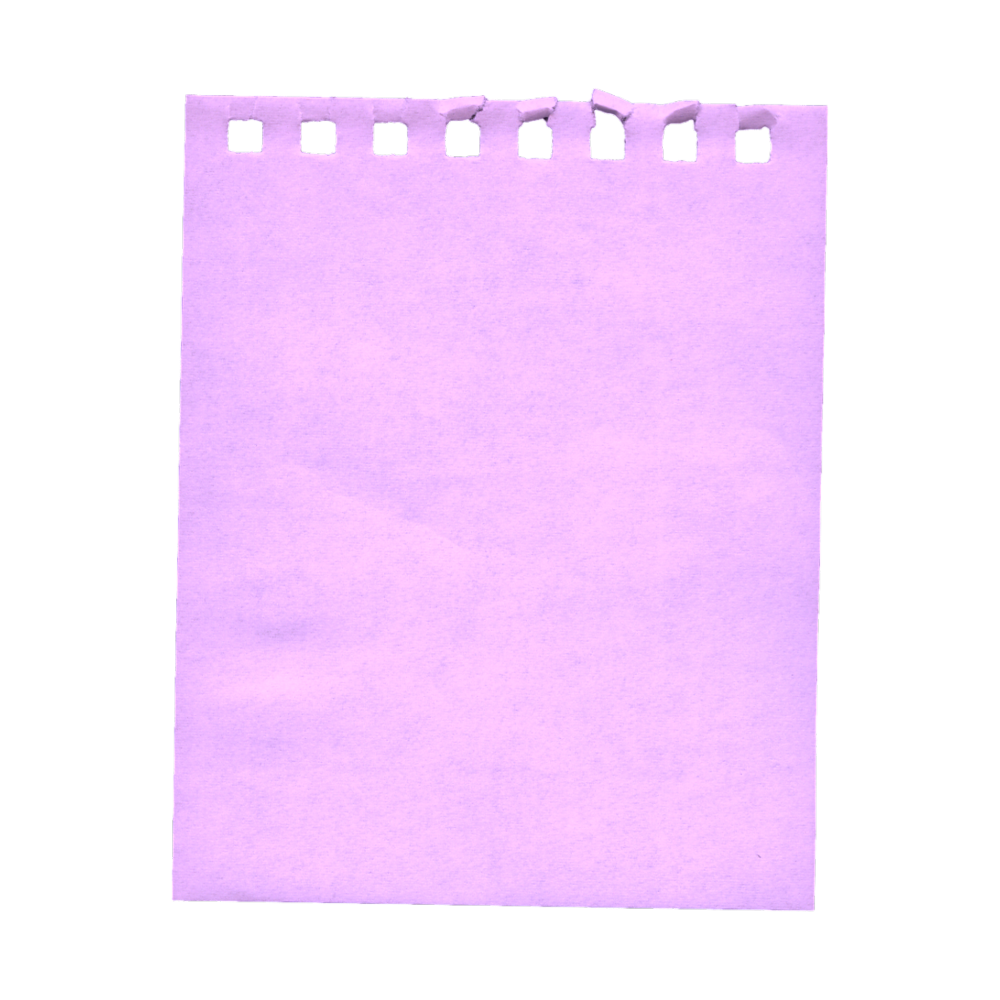
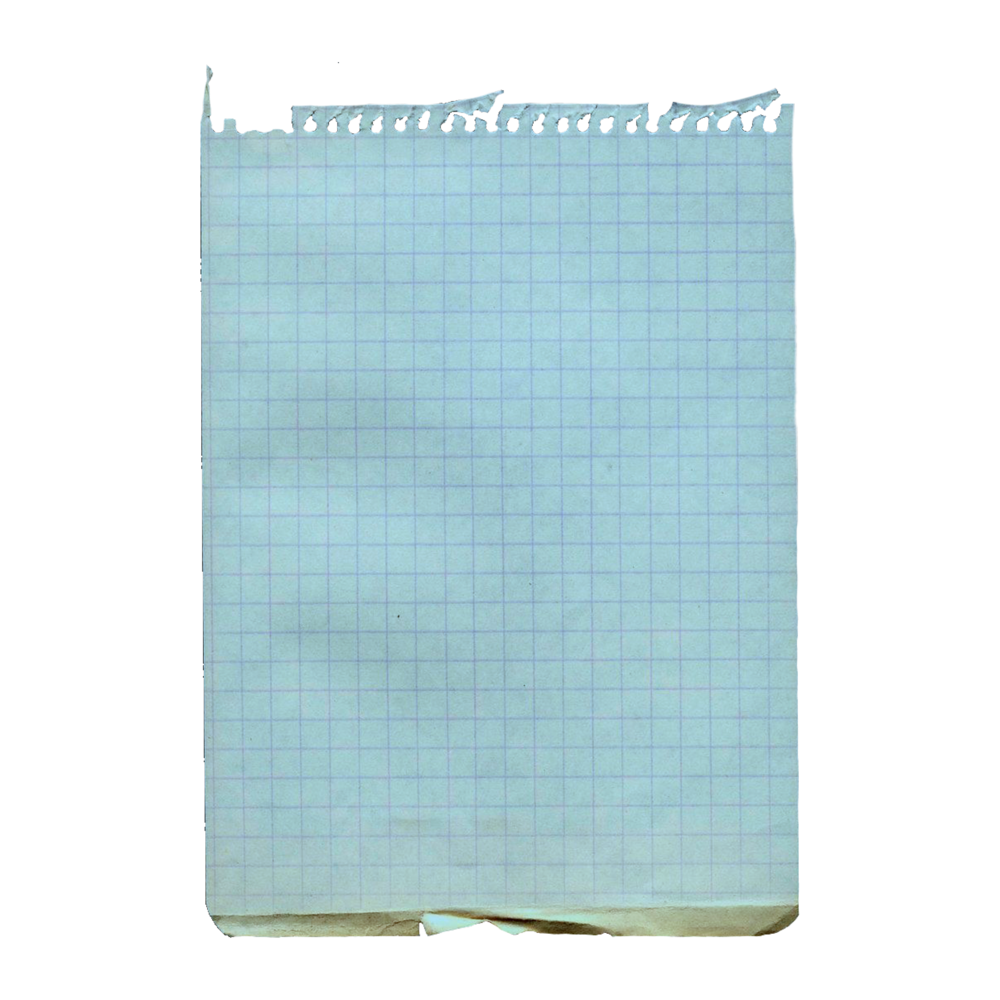
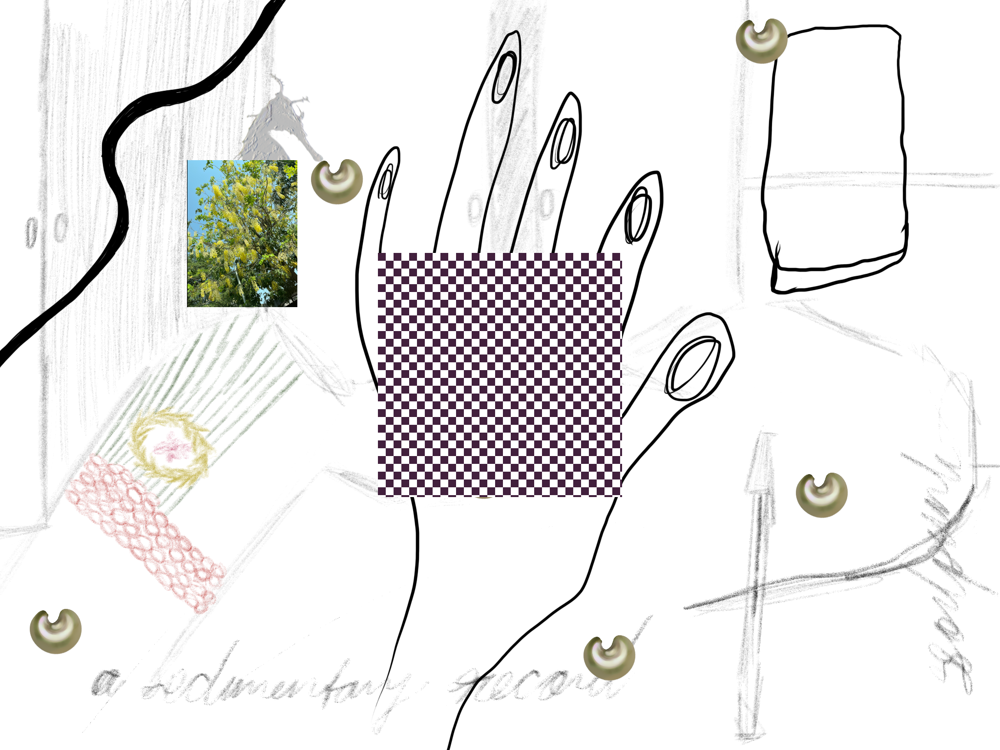
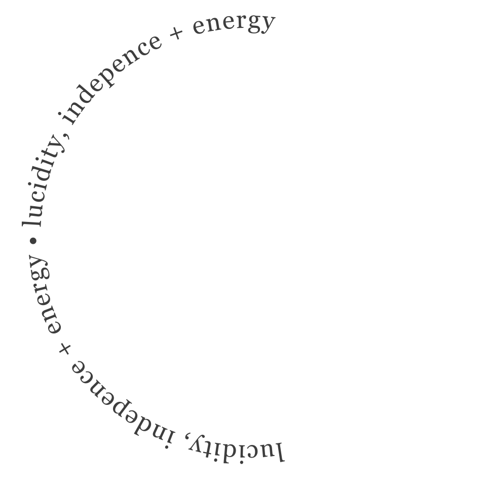
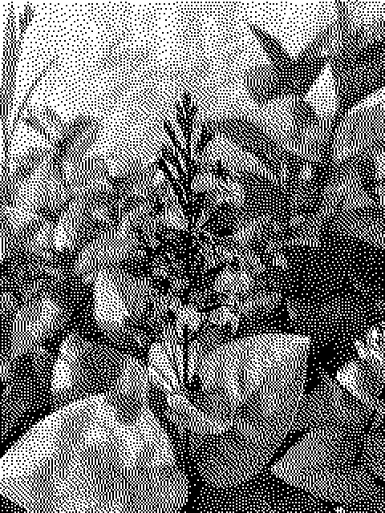
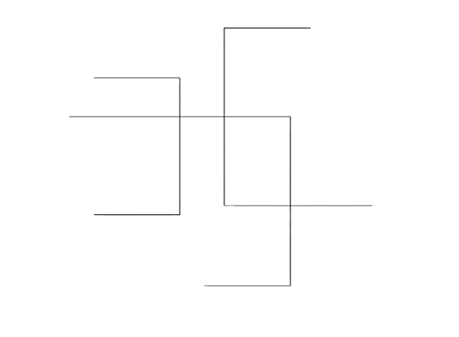

Ways to Say No (working title) is a proposed cyberfeminist database and vehicle for learning. It emerges from the art practice and lived experience of Oritsemughone Ogbemi (a feminist daughter of Itsekiri writers, tradespeople, and engineers), which spans collage, handicrafts, web design, front-end development, and writing. The project’s aim is outreach, knowledge-gathering, and knowledge-sharing. Through the hosting of consciousness-raising video calls and one in-person HTML workshop in Lagos, Oritsemughone will begin to facilitate the joining of African women artists, craftspeople, and cultural practicioners to construct functional strategies + resources for maintaining lucidity, independence, and the ability to work in the midst of ongoing technological extraction and expansion.
The output of the project will be a handmade website (HTML, CSS, Javascript), which Oritsemughone will develop and steward, featuring essays, meeting notes, interviews, recordings, and poetry from the participants in the consciousness-raising exercises. The website will be indexed and navigable as a database.
Thinkers whose work influences this project are: Flora Nwapa, Oyeronke Oyewumi, Octavia Butler, Michael Geoffrey Asia, and Eva Hayward. A few relevant extracts from their work are displayed on the right side of the page.
"From a cross-cultural perspective, the more interesting point is the degree to which feminism, despite its radical local
stance, exhibits the same ethnocentric and imperialistic characteristics
of the Western discourses it sought to subvert." (Oyewumi, Invention of Women: Making an African Sense of Western Gender Discourses, 13)
"Insides become outsides and exteriorities become interiorities;
sensoria and sensations are made and unmade. The power of who observes and who
is observed is tentacled through machines and expertise at ever-changing scales and
grains of resolution.
But all these forces are quite literally impressed on organisms such that
bodies (human, animal, machine) carry the markings, the fleshly and instrumental
inscriptions, of the other." (Hayward, 'Fingeryeyes,' 580)
"Every message I sent was recorded. The platform tracked how fast I replied, which words kept users engaged, and what tone worked best. It felt like the company was collecting more than just labor, they were collecting patterns: how we joked, comforted, or flirted. All that data could easily be reused..." (Asia, 'The Emotional Labor Behind AI Intimacy,' 12)
"That, Lilith thought, was a foolish way for someone who had decided to spend his life among the Oankali to think—a kind of deliberate, persistent ignorance." (Butler, Dawn)
Relevant past work is on my website and in my newsletter, Second Creature.
Specific projects are outlined within this PDF (click to download).





